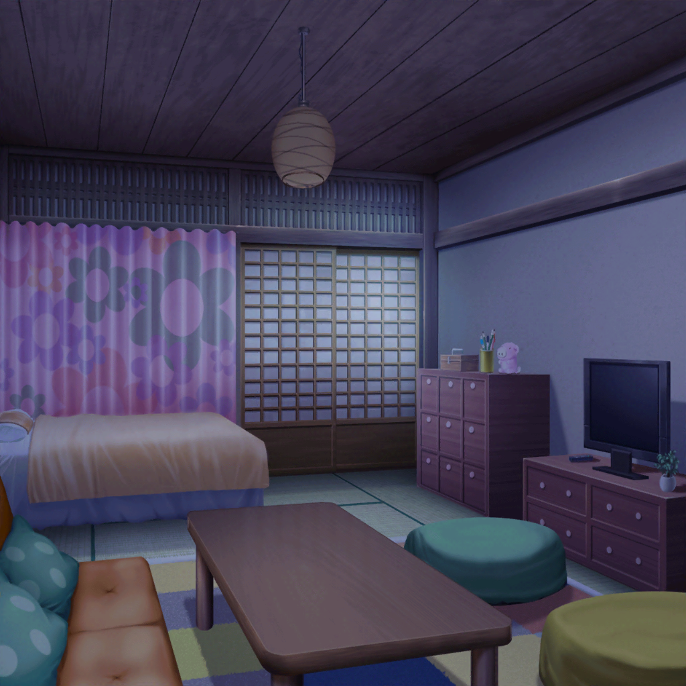

ライブ終了後
楽屋
たえ
ねえねえ有咲。今日のライブ、すごくよかったよね？
どう思う？ 私はね、特に『STAR BEAT!』が……
有咲
わかったわかった！ いい感じだった！
ちょ、ちょっと落ち着け！
沙綾
うん、いい感じだったと思う！
お客さんも盛り上がってたね
りみ
はあ〜……うまくいってよかったあ……
沙綾
りみりん、お疲れ！
有咲
……ふぅ。片付けも終わったしそろそろ撤収するか。
今日はなんか食べて帰るか？
たえ
行きたい。私、おなかすいちゃった
沙綾
オッケー。じゃあ、ファミレス寄ってこうか
香澄
私、今日のライブで体力全部使い切っちゃったよ〜……
有咲
香澄、配分ってものを考えろよ……
香澄
みんなともっともっと今日の話、したいけど
このまま座ってたら私、寝ちゃいそう……
りみ
あはは……それじゃあ、今日はこのまま解散しよっか。
香澄ちゃん、ゆっくり休んでね
たえ
香澄、おやすみ
有咲
ここで寝るなよ！？
香澄の部屋
香澄
……
香澄
（なんか、家に帰ってきたら、めちゃくちゃ目が冴えて
きちゃった……）
香澄
うわ〜〜、どうしよう！ 急にテンション上がってきた！
どうせならみんなとご飯食べたかったよ〜〜〜！！
香澄
こんな時は、グループチャットに……

有咲の部屋
有咲
ん？ なんかめちゃくちゃ通知が来てる……って香澄！？
香澄
『家に帰ってきたら目が冴えてきちゃった！！！
どうしよう！？』
有咲
うわ、スタンプ押しすぎ……どうしよう、って……
『今日はもう寝ろ！ 落ち着け！』

沙綾の部屋
香澄
『え〜〜〜だって〜〜〜！ もっと話したいよ〜！
今日のライブのこととかさ〜！！』
沙綾
『香澄、今日声がよくのびてたよ』
香澄
『ほんと！？ あ、』
香澄
『さーやのドラムもすっごい』
香澄
『楽しそうに聴こえた！』
有咲
『まとめて打て！』
沙綾
……ふふっ
りみの部屋
りみ
えっと……今日のライブ、私もめっちゃ……
香澄
『もっともっとライブしたいよ〜！！ あ！ 今日の打ち上げも
改めてやりたい！ 有咲ん家の蔵で！』
有咲
『勝手に決めるな〜〜！！』
りみ
ふふっ。香澄ちゃんと有咲ちゃん、打つの速いなあ……
『打ち上げ、楽しそうだね。私もやりたいな』……っと
沙綾
『打ち上げ、いいね！ やろうやろう！ 場所は蔵以外の
どこかってことになるのかな？』
有咲
『別に、うちでもいいけど……』
香澄
『有咲♡♡♡♡♡』
沙綾
『あれ、そういえばおたえは？ おたえ、起きてる〜？』
たえの部屋
たえ
『音、すごい響いてたよね。音響がよかったのかな』
たえ
『りみのベースも、よく音が鳴ってて花火みたいだった』
たえ
『ドーン』
たえ
『ドーン』
有咲
『待て。なんの話だ？』
たえ
『ライブの感想』
たえ
『あと』
たえ
『ギターも』
香澄
『わかる！ ドーン！ って感じだったよね〜〜！
今日のライブ、ほんっとーに楽しかったよ』
有咲の部屋
有咲
……ったく、打ち上げの話、どうなったんだよ……
香澄
『こんど、お』
有咲
？
沙綾
『香澄、多分寝落ちしたね』
りみ
『お、ってなんだろう？』
有咲
『しょうがねーな……
打ち上げの話もあるし、明日直接聞いてみよう』
沙綾
『だね。じゃあ今日はこれでお開きかな？ おやすみ〜』
りみ
『うん。おやすみ』

翌日
通学路
香澄
あっりさ〜！ みんな〜！ おっはよー！
有咲
おはよ。てか香澄、昨日の最後のチャット、なんだったんだ？
香澄
え？ 何かあったっけ？
たえ
昨日のチャット、見てみて
香澄
『こんど、お』……？ なにこれ？
有咲
こっちが聞きてーよ！
香澄
昨日、スマホ握りながら寝ちゃったから、
間違えて打っちゃったのかも……えへへ、ごめんね
香澄
それよりそれより！ 打ち上げ打ち上げ！
打ち上げのこと決めようよ〜〜！！
沙綾
あはは……それは覚えてるんだ……